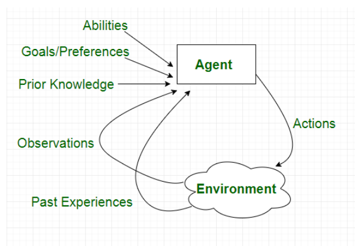
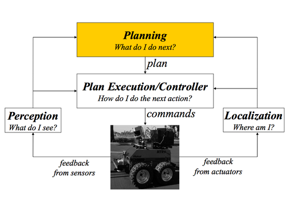
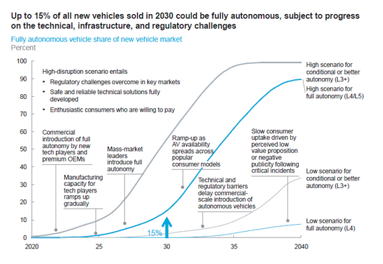

Ro/Bots: UBI, LAWS, and Moral Machines
*NOTE* Please check Moodle and email by the end of break if you encounter any issues. If Moodle indicates you are missing Datacamps, please log on to our group there, click on assignments, and check past due. Also, it is very cumbersome to go back and check for completed datacamps. Best practice is to complete missing assignments and email Prof. E and Tam so they can verify and update.
This week: While the original Industrial Revolution automated simple manual labor, we are in what is called The Fourth Industrial Revolution. This uses Data+AI+Robotics to increasingly take over both largely physical tasks (e.g. driving on highways and automated killing on the battlefield) as well as largely cognitive tasks (e.g. code generation and emotional care giving). How will we respond to this automation of what has long been considered the exclusive domain of humans?
We'll first explore why some argue this new wave of automation differs from earlier waves. Our ethical debate will center on whether Universal Basic Income (UBI) is a viable solution to the potential eradication of entire employment sectors. How should we prepare for the coming automation of so many different kinds of jobs, from truck drivers to paralegals and from programmers to journalists? We'll also consider what happens when our autonomous systems make ethical decisions about whom to kill without the oversight of a human decision maker. Can (or even should) we ensure that self-driving cars make ethical decisions in the case of an unavoidable accident? Should we use Lethal Autonomous Weapons (LAWs) for warfare to minimize civilian collateral damage? In what ways could LAWs lead to more violence and conflict?
Finally, we consider how robots may replace humans in even more intimate ways. Should everyone be able to augment themselves with robotic prosthetics for enhancement? Should we allow robots to provide emotional or sexual comfort for the lonely, the aged, or those left behind? Last week, with OOO, we saw a philosophical position that provides a counter to traditional humanism by de-centering a humanist value stance. This week we consider ways that we are creating our own posthumanist world by merging with our machines through robotics or human-machine interfaces.
We also finish the Intermediate Python course on DataCamp. Congratulations, you are now ready to complete some interesting projects using your new skills!
Monday: The Rise of the Machines
- The Rise of the Machines - Why Automation is Different This Time (11:40) Kurzgesagt, Jun 2017
- Will Robots Really Steal Our Jobs? An International Analysis of the Potential Long-term Impact of Automation (through section 2, Introduction (with a discussion of Luddites) p. 10) PwC, Jan 2019
- Everything You Need to Know About the New Economy (THROUGH 9:00) (Strong POV, not an endorsement, but a good intro to the larger economic context)
- Universal Basic Income Explained, (9:00) Kurzgesagt
- (Skim QUICKLY for how they use RTC to quantify 'evidence-based' UBI policies: Abstract, Background, Methods, Conclusions) The Revolution Will Not Be Randomized: UBI, RCT and "Evidence-Based" Social Policy, Malte Neuwinger et. al., SAGE Global Social Policy, 3 May 2022
- Beyond Bionics: How the Future of Prosthetics is Redefining Humanity (15:31) TheGuardian.com, Jun 2018
- DataCamp Intermediate Python
- Chapter 4: Loops
- Test Your Understanding:
- Some argue that automation is nothing new (note the story of the Luddites). In what ways were the Luddites right? Why do others argue this time is different?
- Which cognitive jobs are threatened by automation? Which are more robot-proof?
- A typical societal response to automation is to suggest education and retraining as an answer to automation. How/what limitations might there be to this approach, especially if this time really is different?
- What is UBI? What other solutions to the coming automation might you propose?
- Should there be limits on robotic methods of augmenting our bodies?
- In DataCamp you'll learn how to use for loops to iterate over different data structures. This can be confusing, since each type requires a slightly different syntax. Try to categorize the different approaches to iterating over: lists, lists of lists, numpy arrays, dictionaries, and panda DataFrames. The last few exercises are challenging--don't worry if you need to ask for a hint.We'll also practice in class.
Wednesday: Moral Machines? **Meet in Seminars--O'Connor and ASC**
- Neuralink: Merging Man and Machine (12:51) Aperture, Jan 2020
- Asimov's 3 Laws of Robots Reordered, Just the top explanation, explainxkcd.com
- Elon Musk: Tesla Autopilot, (32:44) Lex Fridman, AI Podcast, Apr 2019
- Pentagon's Mini-Drones Swarm Like Bees (1:14) Business Insider, Jan 2017
- Risks of Lethal AWS AutonomousWeapons.org
- Intelligence, Surveillance and Reconnaissance Design for Great Power Competition, (p. 2 ONLY) Congressional Research Service, Jun 2020
- Misinformation is about to get so much worse The Atlantic, September 27, 2021.
- Robotic Pets Are Helping Dementia Patients (4:11) Vice News | HBO, Oct 2017
- Datacamp, Project: Analyzing TV Data (Guided) Due Wednesday at midnight
- Test Your Understanding
- We continue our investigation of transhumanism with a closer look at neuralink, a brain-human interface. Should we all be allowed to augment our brains in these ways?
- How can we update the traditional 3 Laws of Robots to account for self-driving cars and lethal autonomous weapons? What are the arguments for and against LAWS?
- Should we allow robots to provide comfort to humans? How do we prevent exploitation of the vulnerable?
- In DataCamp, you will be doing your second project (for the guided version, you will need to hit "next task" on the left hand side for instructions). Bring any questions/problems to Wednesday's class. We will also be available for office hours/questions Wednesday afternoon for anyone needing help. NOTE sometimes you fill in "...", sometimes you have to write an entire line of code and the # will tell you "YOUR CODE FOR TASK #...". Check project after each step. Ask for a hint if you need it.
Friday: October Break
In Class Demo:
- Loops and BigO Jupyter notebook
- Python Iterators, Idiom, Performance and JAX
- Boston Dynamics Atlas Parkour, Aug 2021
- Here's Comes the US Army's New Super Robo-Dog With Sniper Rifle, Nov 2021
- MIT Moral Machine Quiz (Be sure to read the descriptions carefully and takes notes on the differences between your response and the average response - may be on quiz
More Discussion Questions:
- AI and robotics researchers often try to anthropomorphize technology via Animatronic/Video faces, Voice Interfaces (VUI) or biped robots with human faces and gestures. Often this makes interaction more intuitive and effective and sometimes they tumble into the Uncanny Valley. Are there scenarios where we should design AI or robots to be clearly non-human? In which scenarios and why?
- What do you feel about AI/robots developing emotional intelligence? Humans constantly lie, persuade or otherwise try to influence others for their own benefit; would it be wrong if AI/robots do the same? Can you think of any rules or regulations (e.g. transparency or liability laws) that could make the use of affective computing tolerable or even preferable to the human variety?
- Humans have developed a number of laws to protect the most vulnerable of our society (e.g. child services, laws against elder abuse and predatory lending practices). How do we calibrate just how aggressive, intelligent and effective our AI/robotic technologies can be to ensure these legal protections?
- Former US Justice Dept Lawyer and UC Berkeley Boalt Law School Professor John Yoo famously made the argument that we may not want to rule out using assassin drone technology in a first strike scenario. After all, surgically killing one person or a group of leaders is objectively more humane than the massive loss of life, property and material that comes with conventional warfare. What do you think of this reasoning? Can you think of qualifications that could improve this position? Given the growing appeal of automated warfare, can you think of a way to retard the logical slide toward an automated tech warfare that is detached from any public awareness or understanding?
- Should we allow users of self-driving cars to program their own choice of casualties in the unfortunate instance in which someone might die? Should this be determined by country to account for cultural difference?





